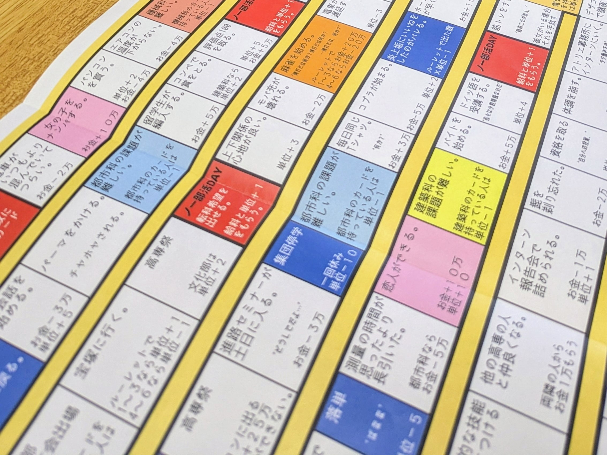
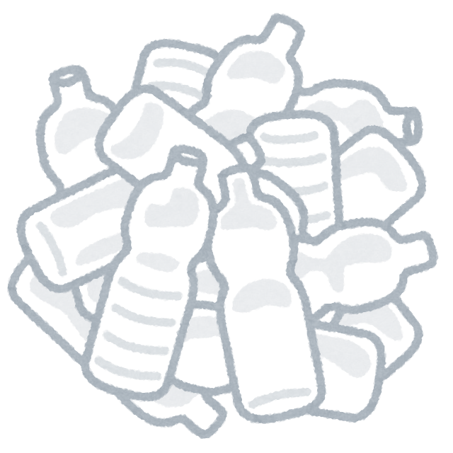
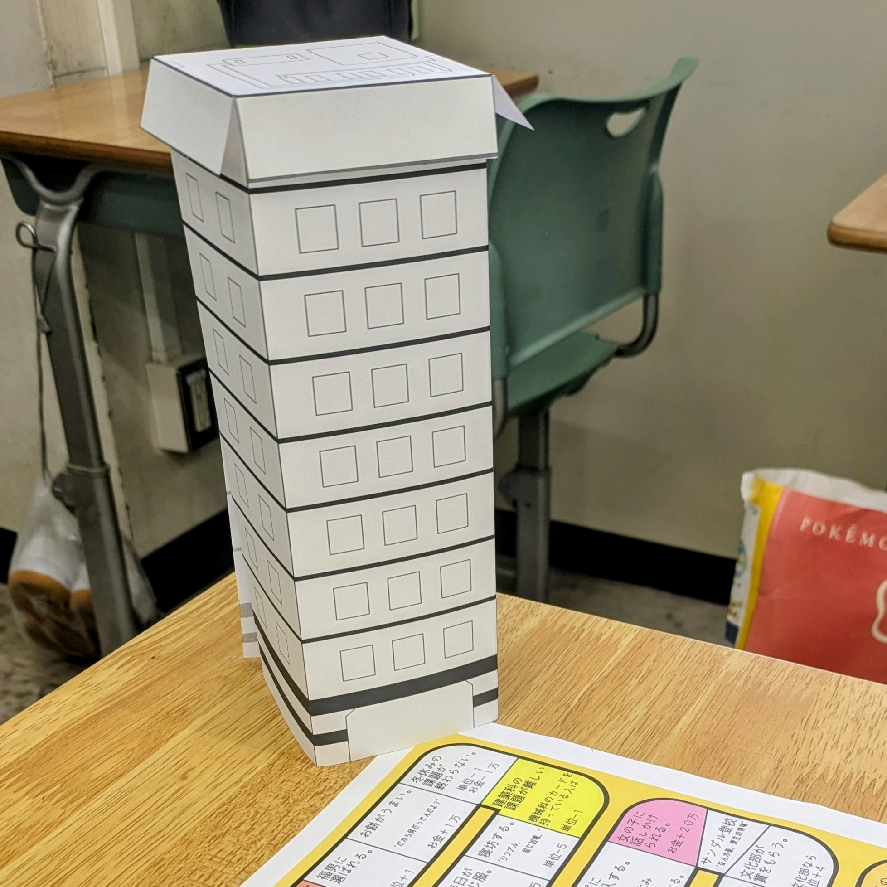

高専人生ゲームは人生ゲームのような「人生」ではなく
5年間の「高専人生」にフォーカスしたボードゲームです
How to Play
1．下のリンクから台紙と遊び方をダウンロード
2．印刷してプレイ
How to Make
ダウンロードはこちら環境への配慮
1. 廃棄物の削減
ペットボトルを建造物の支えとして再利用することで、ゴミを減らし、廃棄物の問題解決に貢献します。
特にプラスチックゴミは分解に長い時間がかかるため、再利用の促進は環境負荷を軽減します。
2. 資源の節約
ペットボトルを建物の基礎や小道具に転用すれば、新たに材料を購入する必要がなくなり、資源の無駄遣いを防ぐことができます。

